TRANSMISSION 001 / OCTOBER 18, 2026 / EVENT RECAP
ADVENTURES
IN TIMELAND
Our first Psych Fest West gathering brought King Gizzard fans together for an afternoon of music, records, craft beer and community at Cellarmaker Brewing in Berkeley.
The psych community came together, Gizz fans brought swag, photos & artwork, DJ Tobiwan spun vinyl and the big screen + PA system carried the stream of King Gizzard & the Lizard Wizard's Melbourne show at appropriately loud volume levels.
Thanks to everyone who came out and helped make our first transmission a success.
More strange happenings ahead.
JOIN THE COMMUNITY ↗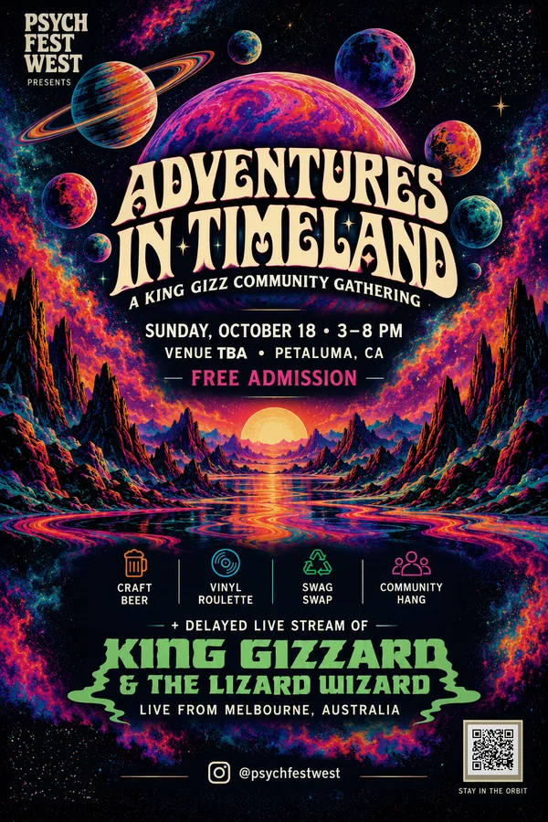
THE AFTERGLOW
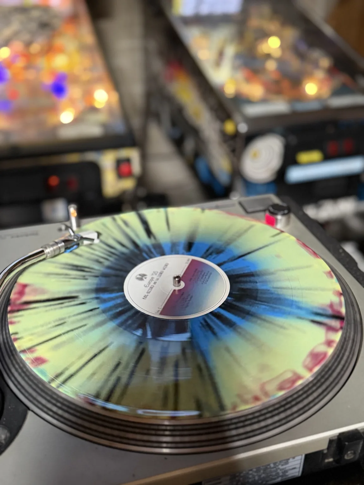
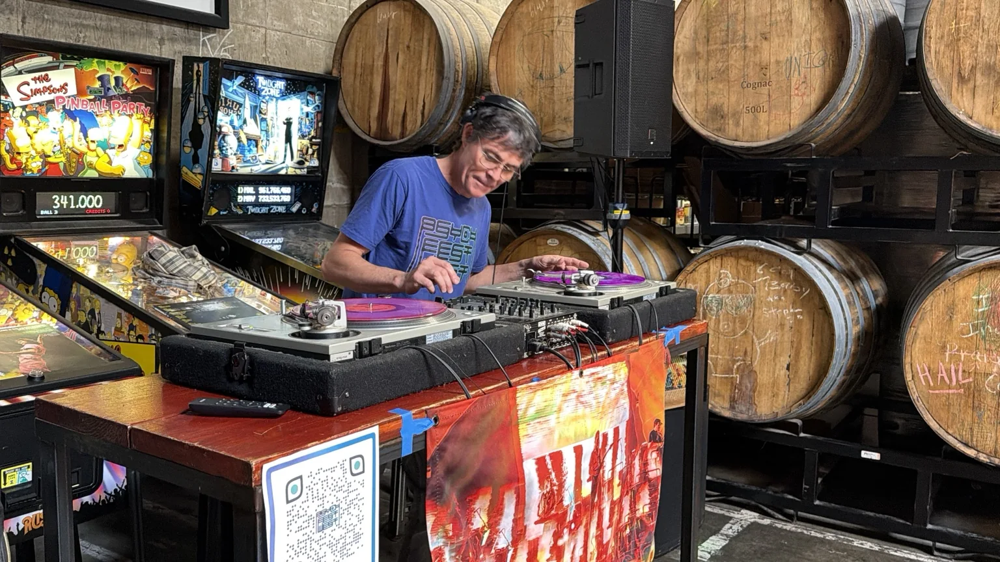
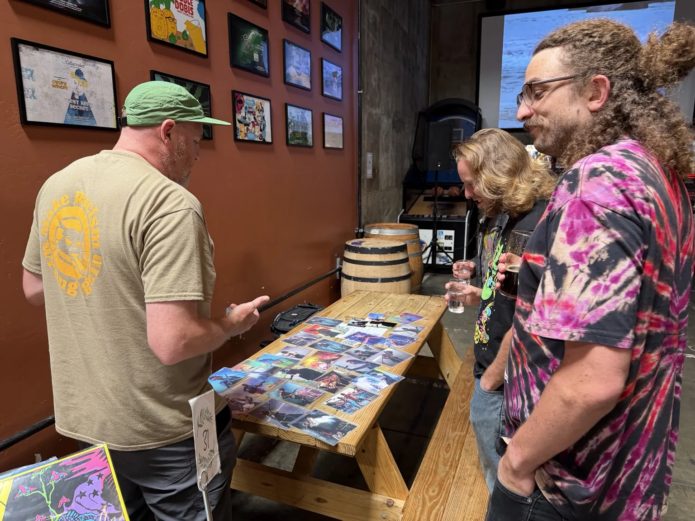
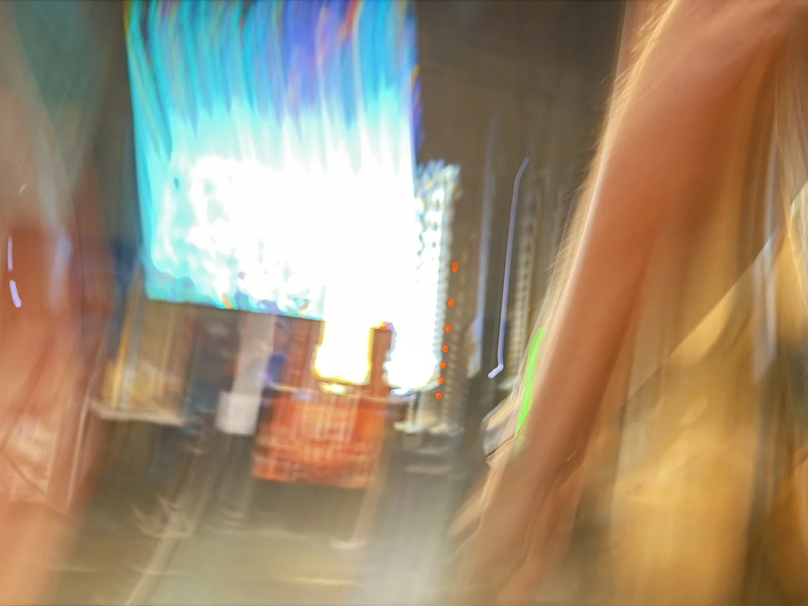
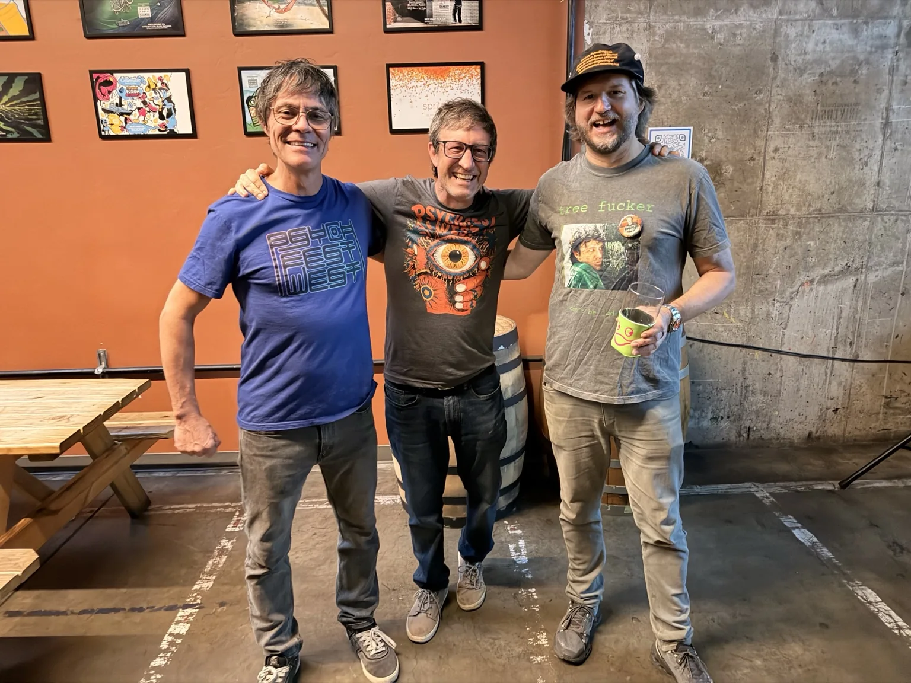
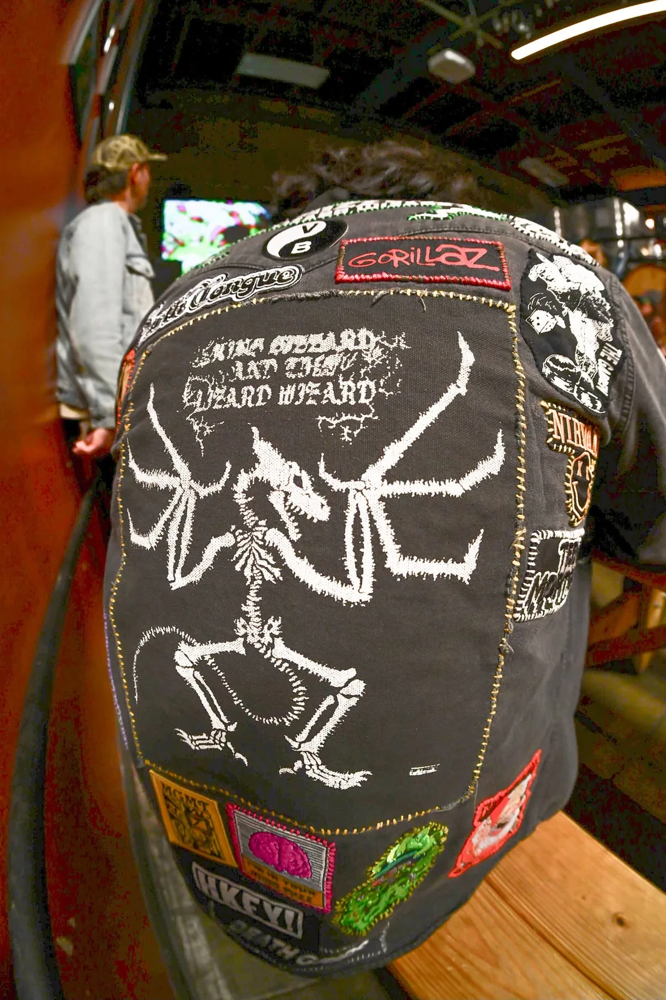
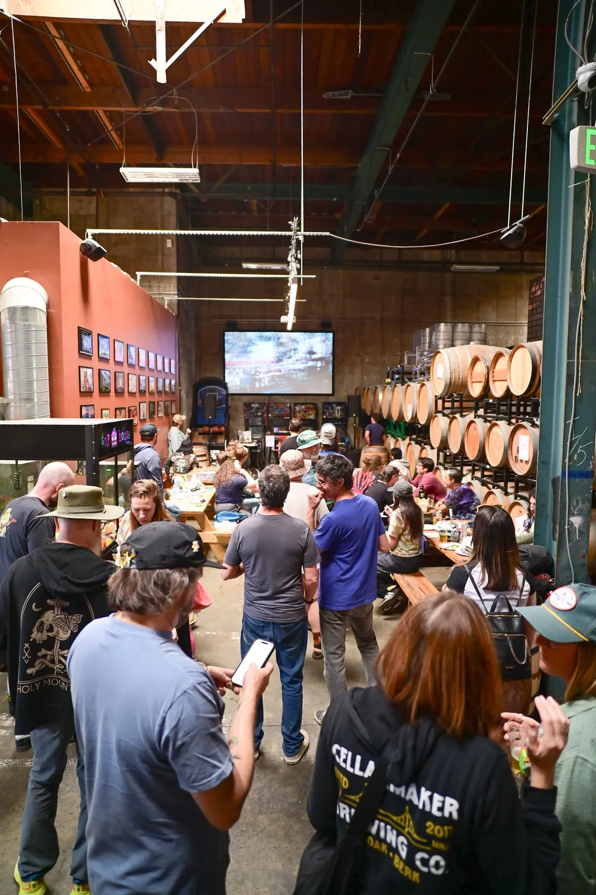
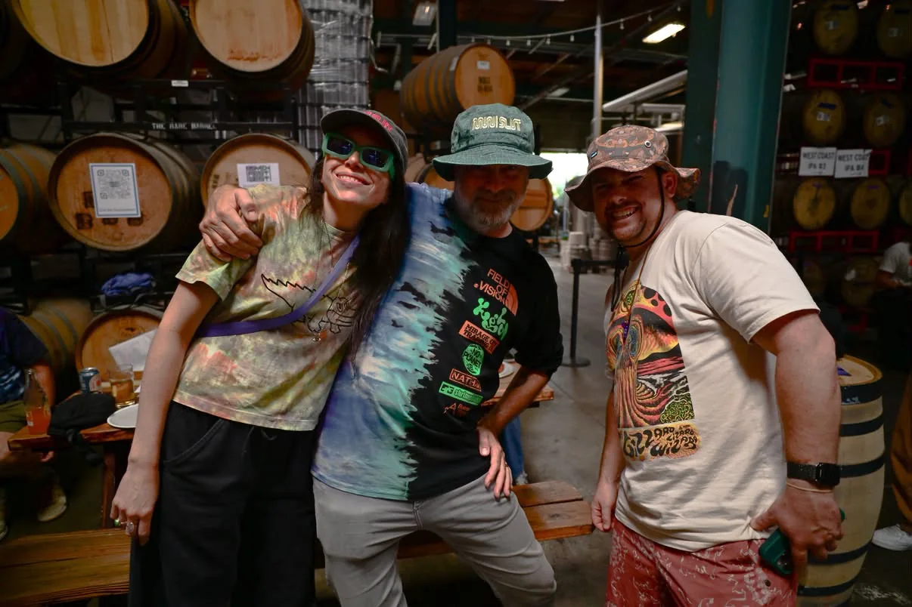
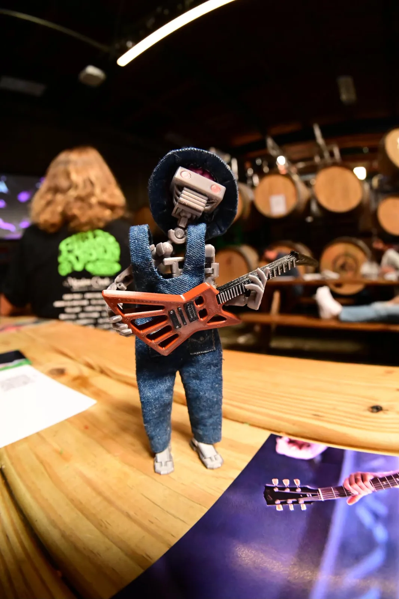
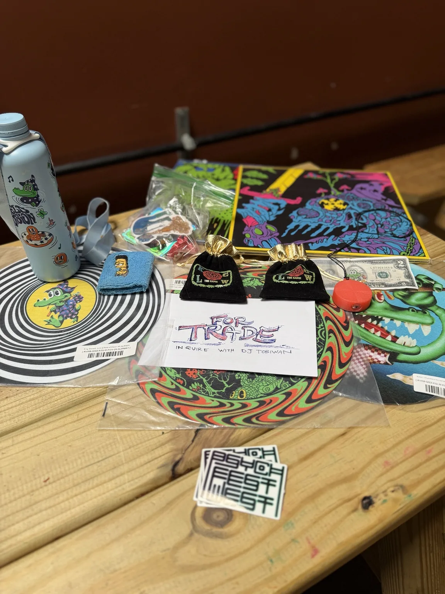
Original event artwork and announcement: view the archived promotion ↗